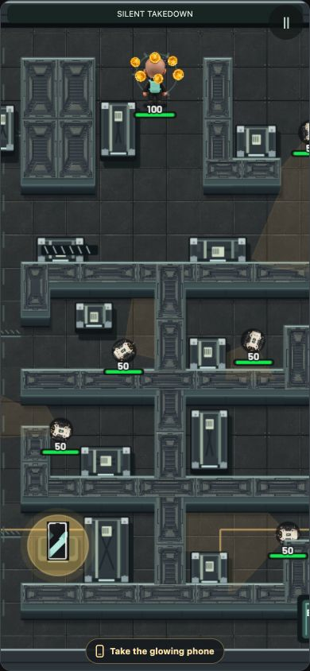
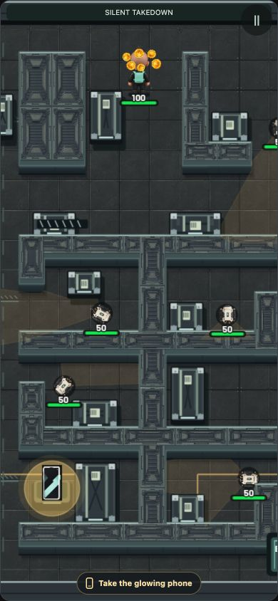
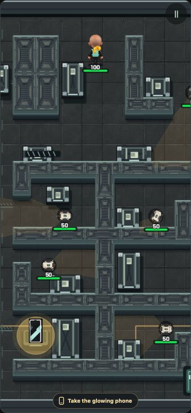
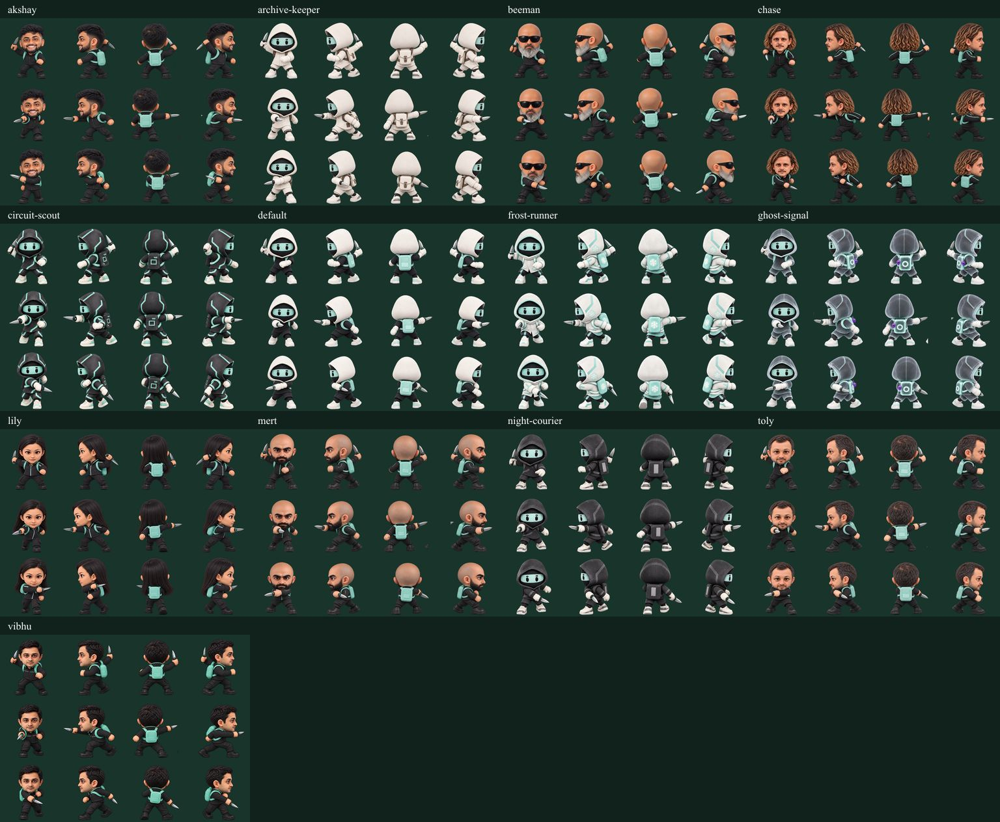
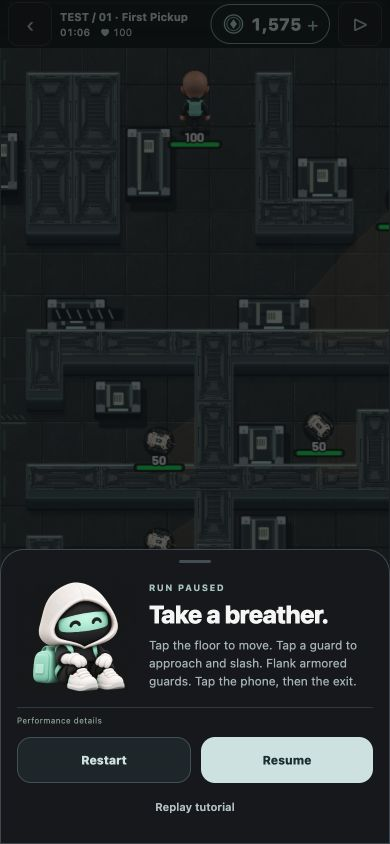

365 tests passed. TypeScript, web export and replay rule checks passed. Captured from actual browser gameplay at 390 × 844. Observed 60 FPS, p95 17.2 ms, zero slow frames. Android has not been tested for this change.



Coins are cosmetic. Existing credits and scoring are unchanged. Shared implementation covers all 12 maps; automated coverage checks every guard slot. This is not a claim of 12 manual playthroughs.

Variant A
Variant B
